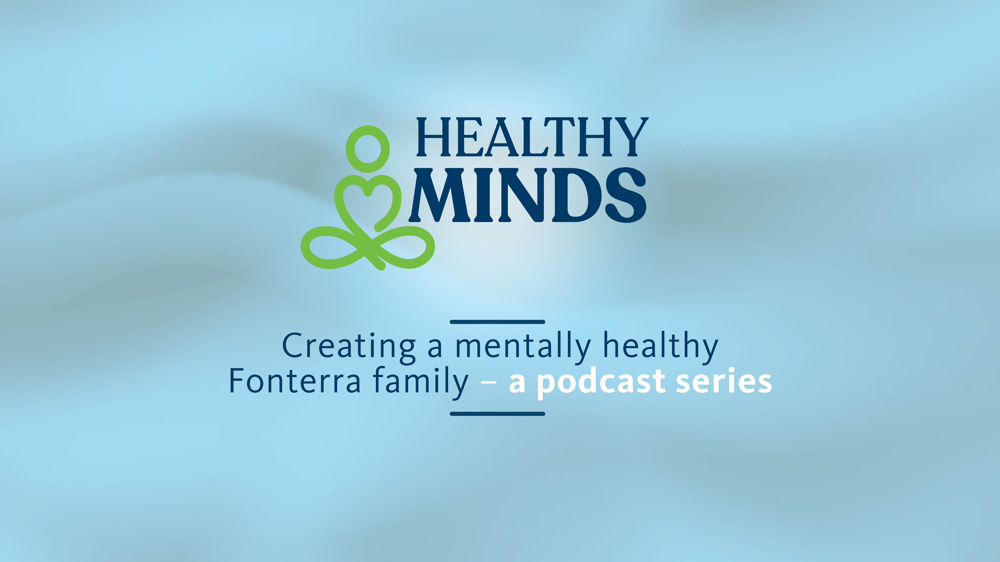

A look back at how Fonterra's mental health podcast has grown, from breaking the silence to rebuilding identity to leadership as a daily practice. Twenty-four conversations. One continuing story.
Each season took the conversation somewhere new. Together they tell the story of what happens when Fonterra keeps showing up for its people.
Season 1 didn't try to solve anything. It just tried to make space. Fonterra people told stories they'd never said out loud at work. Loss, depression, the weight of carrying it alone. The bravery wasn't in the answers. It was in the fact that anyone showed up to share at all.
So when was the moment you realised you couldn't keep carrying this on your own?
If Season 1 was about breaking silence, Season 2 was about what comes next. Fonterra people stopped asking whether they could talk and started asking who they wanted to become. The stories got more specific, the pain more honest, and the hope more real.
If you could sit with him now, what would you want him to know?
Season 3 brought in outside experts alongside Fonterra voices. The question changed from "what happened to you?" to "what actually helps?" Financial wellbeing, physical health, self-care, relationships. Real tools from people who live and breathe this work every day.
So what's the smallest thing someone could do tomorrow that would actually make a difference?
Season 4 turned the conversation towards Fonterra's leaders. Not "be a better leader" but "the way you show up is already teaching your team what's allowed." These leaders opened up about their own journeys and showed that vulnerability isn't weakness. It's how trust gets built.
If your team watched you this week, what would they say you were really telling them was okay?
What's been built over four seasons is worth more than a back catalogue. This page could become something the whole Fonterra family can explore. A place to listen, watch, and find the moments that connect most to them.